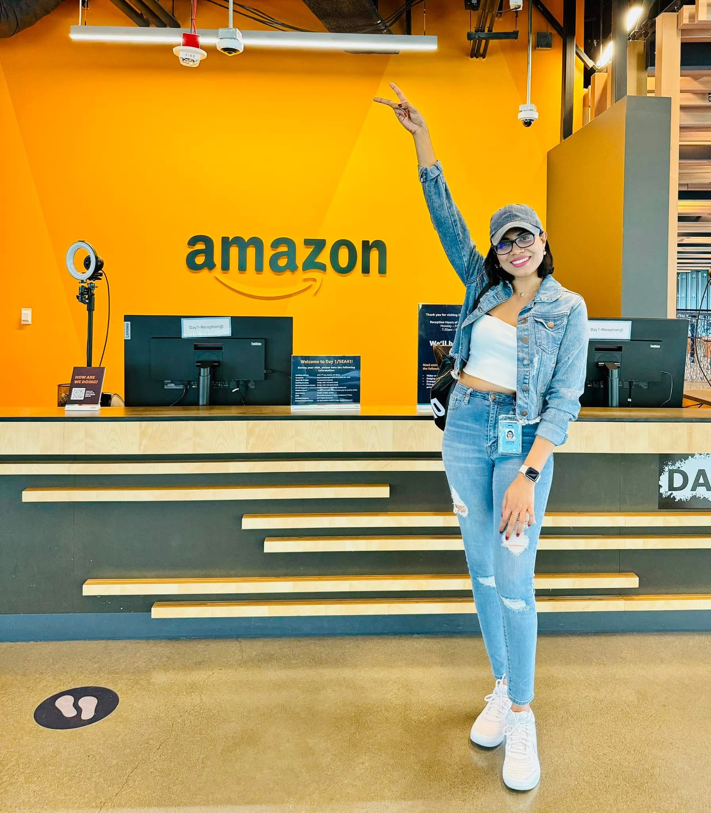

Amazon · Summer 2025Amazon · Merch on Demand · SeattleMay – Aug 2025
Applied Scientist Intern: Generative AI pipeline
- Problem
- Show products in realistic, context-aware scenes without manual design work.
- Approach
- An end-to-end pipeline using diffusion models (FLUX.1, CatVTON-Flux) for image generation, LoRA-based refinement for style consistency, and LLM-based quality evaluation that scores every output.
- Result
- Automated generation and quality control, deployed on multi-GPU cloud infrastructure with AWS SageMaker.
- Diffusion models
- LoRA / PEFT
- LLM evaluation
- Multi-GPU
- AWS